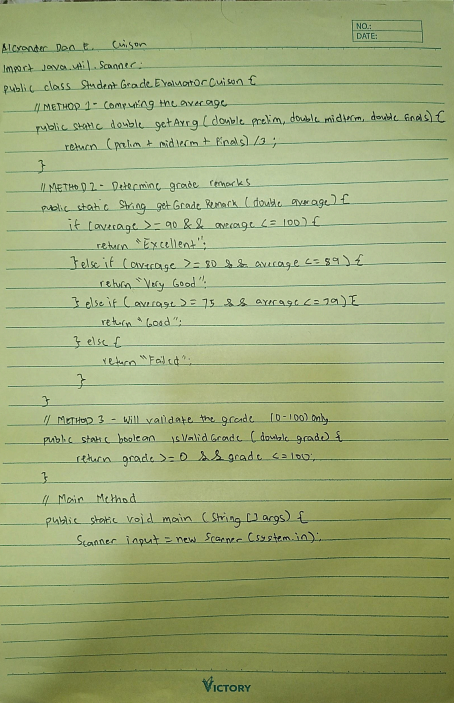
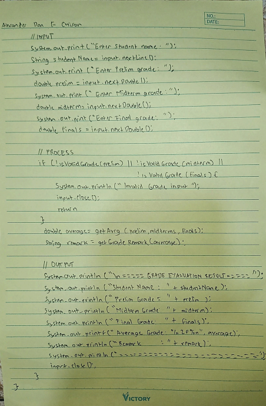
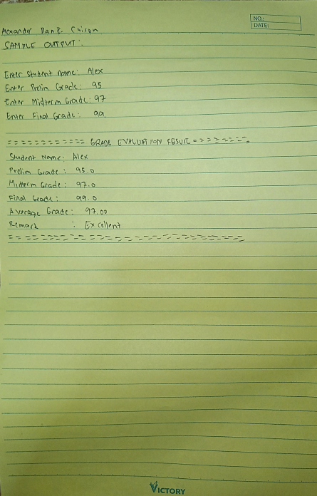
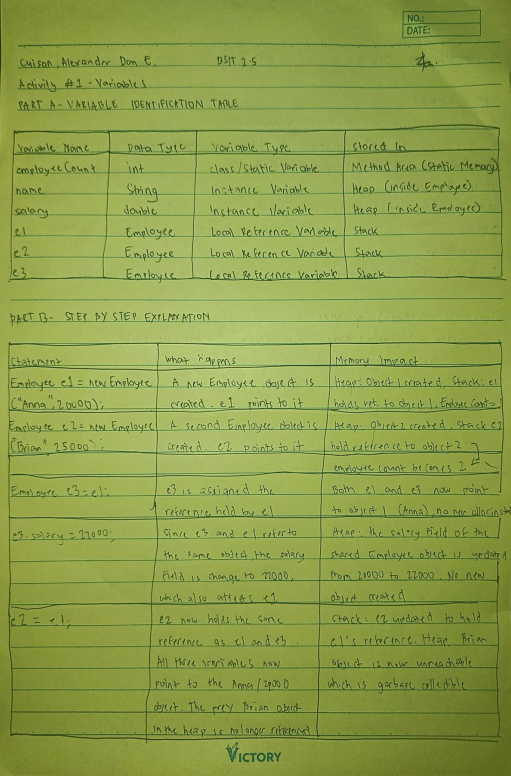
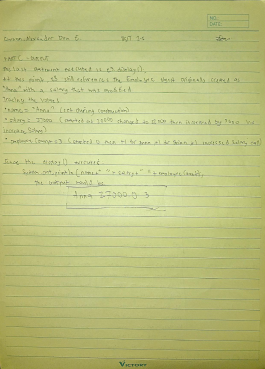
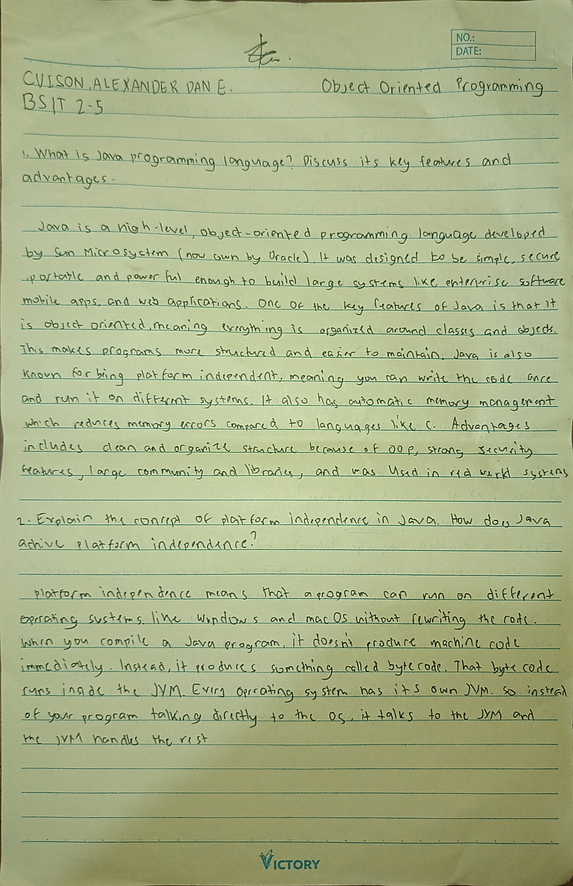
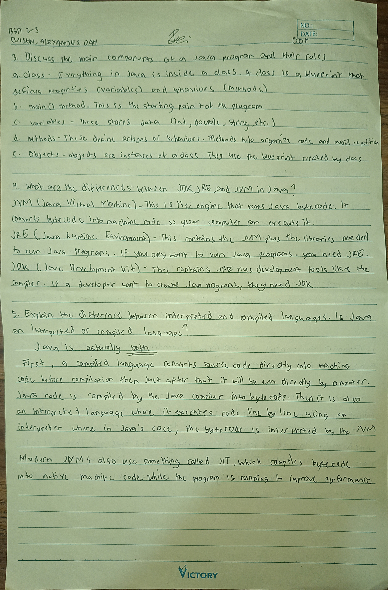
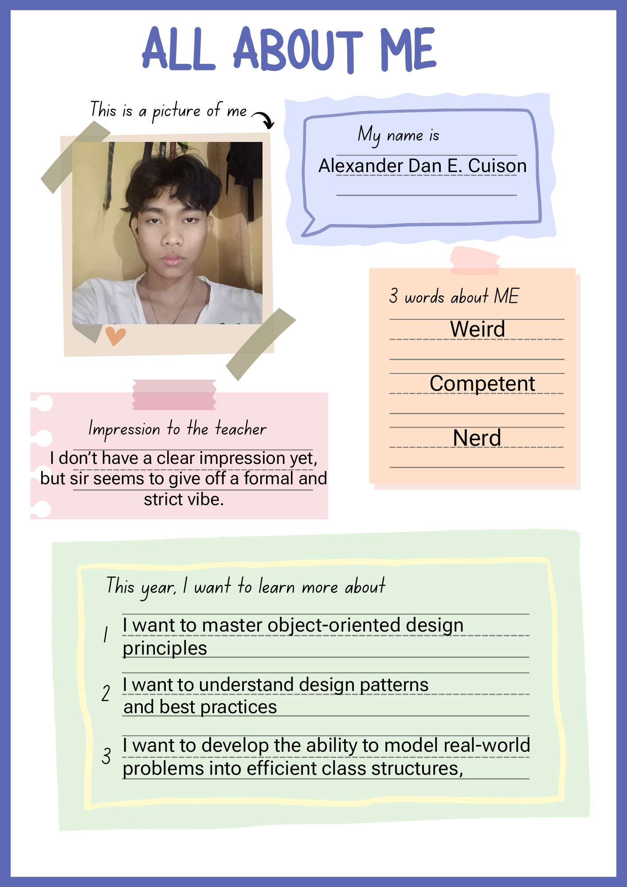

Quizzes · Seatwork · Activities · Assignment · Extra Activity
Face-to-face assessment — No paper copy available
This quiz helped me understand the fundamentals of Java in a clearer and more structured way. It wasn’t just about memorizing what Java is, but actually recognizing why it was created and how it evolved over time. Learning about its history gave me a better appreciation of how programming languages develop to solve real-world problems. The basics of object-oriented programming also started to make more sense, especially concepts like organizing code into methods and understanding how programs are structured. At first, some terms felt overwhelming, but through the quiz, I realized that these concepts are actually connected and build on each other. Overall, this quiz strengthened my foundation in Java and made me more confident in continuing to learn and apply OOP concepts in future activities.
Score graded by Canvas
💡 Type a number (1-45) and press Enter or click Search
This quiz was more challenging compared to the first one because it covered a wider range of topics and required deeper understanding. It tested not only my knowledge of Java basics but also how well I could apply concepts like methods, loops, conditionals, and input handling. While answering, I realized that I still need to improve in analyzing code and understanding how different parts of a program work together. Some questions were tricky, especially those involving logic and output prediction, but they helped me think more critically. Overall, this quiz helped me identify my strengths and weaknesses, and it motivated me to review and practice more so I can become more confident in writing and understanding Java programs.
not graded yet
This seatwork was about tracing how variables change when using increment and decrement operators inside conditional expressions, and honestly it was quite challenging at first because we had to carefully monitor the value of each variable step by step. I learned that the placement of the increment operator really matters, since `a++` uses the current value before increasing it while `++a` increases the value first before it is used, and this small difference can already affect the result of the whole expression. It became even more confusing when we started dealing with short-circuit and non-short-circuit operators, because with `&&`, if the first condition evaluates to false, the second condition is no longer checked, meaning some variables may not be incremented at all, while with `&`, both conditions are always evaluated, so all the increments still happen regardless of the result. Because of this, I had to slow down and carefully trace each line instead of rushing, since one small mistake can lead to a completely different answer. This activity made me realize how important it is to understand how expressions are evaluated in programming and not just rely on intuition. Even though it was confusing at times, it helped me improve my logical thinking, patience, and attention to detail, which are all important skills in coding.
not graded yet
This activity focused on using the Scanner class in Java to accept user input and compute a student’s grade, then provide a corresponding remark based on the result. We were asked to input values such as the student’s grades, and the program would process these inputs to calculate the average. After computing the grade, the program uses conditional statements to determine the appropriate remark, such as “Passed” or “Failed,” depending on the final score. At first, it was a bit tricky to handle user input correctly and make sure the values were properly used in the computation, but as I continued practicing, I became more comfortable with it. This activity helped me understand how important input handling is in programming, especially when interacting with users. It also improved my understanding of how conditionals work in decision-making within a program. Overall, this task strengthened my skills in both using Scanner and applying logical conditions to produce accurate and meaningful outputs.
not graded yet
Create a Java program that evaluates a student's final grade using:
• Scanner (for user input)
• User-defined methods
• Control structures (if-else / switch)
• Further instructions can be viewed on the Canvas file page
import java.util.Scanner;
public class StudentGradeEvaluatorCuison {
// METHOD 1: Compute Average
public static double getAvrg(double prelim, double midterm, double finals) {
return (prelim + midterm + finals) / 3;
}
// METHOD 2: Determine Grade Remark
public static String getGradeRemark(double average) {
if (average >= 90 && average <= 100) {
return "Excellent";
} else if (average >= 80 && average <= 89) {
return "Very Good";
} else if (average >= 75 && average <= 79) {
return "Good";
} else {
return "Failed";
}
}
// METHOD 3: Validate Grade (0–100 only)
public static boolean isValidGrade(double grade) {
return grade >= 0 && grade <= 100;
}
public static void main(String[] args) {
Scanner input = new Scanner(System.in);
System.out.print("Enter Student Name: ");
String studentName = input.nextLine();
System.out.print("Enter Prelim Grade: ");
double prelim = input.nextDouble();
System.out.print("Enter Midterm Grade: ");
double midterm = input.nextDouble();
System.out.print("Enter Final Grade: ");
double finals = input.nextDouble();
if (!isValidGrade(prelim) || !isValidGrade(midterm) || !isValidGrade(finals)) {
System.out.println("Error: Invalid grade input. Please enter values between 0 and 100.");
input.close();
return;
}
double average = getAvrg(prelim, midterm, finals);
String remark = getGradeRemark(average);
System.out.println("\n===== GRADE EVALUATION RESULT =====");
System.out.println("Student Name : " + studentName);
System.out.println("Prelim Grade : " + prelim);
System.out.println("Midterm Grade: " + midterm);
System.out.println("Final Grade : " + finals);
System.out.printf("Average Grade: %.2f%n", average);
System.out.println("Remark : " + remark);
System.out.println("====================================");
input.close();
}
}


The program basically evaluates a student's performance using three grading periods: prelim, midterm, and final. It first asks for the student's name and grades, then it checks if all the inputs are valid (meaning they must be between 0 and 100). If even one grade is invalid, the program stops and shows an error message to avoid incorrect computation.
After validation, it computes the average using a method that simply adds all three grades and divides by three. Then another method is used to determine the remark based on the average, like "Excellent" if the score is high, or "Failed" if it's low. There is also a separate method that handles validation, which helps keep the code cleaner and easier to understand.
Finally, the program displays all the results in a structured format: the student's name, each grade, the computed average, and the final remark. It feels straightforward overall, but the important part here is how the program separates tasks into methods, which makes it easier to read, debug, and reuse later on.
While working on this program, I realized how important it is to organize code properly using methods. At first, I thought it would be easier to just write everything in the main method, but breaking it into smaller parts made the program much clearer and easier to manage. I also understood the importance of validating input to avoid errors in the output. Overall, this activity helped me improve my logical thinking and gave me a better understanding of how to structure a Java program effectively.
not graded yet
// Please review the code below.
public class Employee {
static int employeeCount = 0;
String name;
double salary;
public Employee(String n, double s) {
name = n;
salary = s;
employeeCount++;
}
public void increaseSalary(Employee e) {
e.salary = e.salary + 5000;
employeeCount = employeeCount + 1;
}
public void display() {
System.out.println(name + " " + salary + " " + employeeCount);
}
public static void main(String[] args) {
Employee e1 = new Employee("Anna", 20000);
Employee e2 = new Employee("Brian", 25000);
Employee e3 = e1;
e3.salary = 22000;
e2 = e1;
e1 = null;
e3.increaseSalary(e2);
e2 = null;
e3.display();
}
}

For Part A, I figured out where each variable is stored based on how it's declared and used. The static variable employeeCount belongs to the class itself, so it's stored in the Method Area and shared by all objects. The instance variables like name and salary are stored in the Heap because they belong to each specific object. Meanwhile, the reference variables such as e1, e2, and e3 are stored in the Stack.
In Part B, I followed what happens step by step as the code runs. When the first Employee object is created, e1 points to a new object in the heap. Then when e3 = e1 is executed, no new object is created — e3 just points to the same object as e1. So when I updated the salary using e3.salary = 22000, the change also appeared when accessing it through e1, since they are pointing to the same object. Later, when e2 = e1 is executed, the original object that e2 was pointing to (the "Brian" object) is no longer referenced by any variable, so it becomes eligible for garbage collection.
For Part C, I focused on the final state of the object referenced by e3. Since e3 still points to the original "Anna" object, I tracked all the changes made to it. The name stayed the same, but the salary was updated from 20000 to 22000, and then increased again to 27000 through a method call. The employeeCount ended up as 3. So in the end, when the display() method was called, it printed: Anna 27000.0 3.
not graded yet
Create a Java program using bitwise operators that will produce the output: true, 10, false, 15.
public class BitwiseActivity {
public static void main(String[] args) {
int a = 10; // 1010 in binary
int b = 15; // 1111 in binary
boolean res1 = (a < b) & true;
int res2 = a & b;
boolean res3 = (a > b) | false;
int res4 = a | b;
System.out.println(res1 + ", " + res2 + ", " + res3 + ", " + res4);
}
}This part is about how Java works at the bit level. We start with a = 10 and b = 15, and in binary those are 1010 and 1111. For res1 = (a < b) & true, since 10 is less than 15, the result is true. For res2 = a & b, it compares each bit, and since 1010 matches with parts of 1111, the result is still 1010 or 10. For res3, it checks if 10 is greater than 15, which is false, so false OR false is still false. Then res4 = a | b combines the bits, giving 1111 or 15.
Create a Java program using the ternary operator that will produce the output: true, false, 25, 30.
public class TernaryActivity {
public static void main(String[] args) {
int x = 25;
int y = 30;
boolean res1 = (x < y) ? true : false;
boolean res2 = (x > y) ? true : false;
int res3 = (x < y) ? x : y;
int res4 = (x < y) ? y : x;
System.out.println(res1 + ", " + res2 + ", " + res3 + ", " + res4);
}
}The ternary operator is basically a shortcut for if-else. For res1, it checks if 25 is less than 30, which is true. For res2, it checks if 25 is greater than 30, which is false. Then res3 returns the smaller value (25), while res4 returns the larger value (30). This part was easier to follow compared to the bitwise activity.
Create a Java program using assignment operators that will produce the output: Addition: 120, Subtraction: 70, Multiplication: 144, Division: 16.
public class AssignmentActivity {
public static void main(String[] args) {
int add = 95;
int sub = 95;
int mul = 12;
int div = 48;
add += 25; // add = 120
sub -= 25; // sub = 70
mul *= 12; // mul = 144
div /= 3; // div = 16
System.out.println("Addition: " + add + ", Subtraction: " + sub +
", Multiplication: " + mul + ", Division: " + div);
}
}This section focuses on assignment operators, which update values directly. For example, add += 25 takes 95 and adds 25, making it 120. Then sub -= 25 results in 70. mul *= 12 multiplies 12 by 12 to get 144, and div /= 3 divides 48 by 3 to get 16. These are just shorter ways of writing operations, and they make the code look cleaner.
Create a Java program using arithmetic, relational, logical, and unary operators that will produce the output: FALSE, TRUE, TRUE, 40, TRUE, FALSE, FALSE, 80.
public class MixedOperatorsActivity {
public static void main(String[] args) {
int n = 40;
int m = 80;
String b1 = Boolean.toString((n > m) && true).toUpperCase();
String b2 = Boolean.toString((n < m) || false).toUpperCase();
String b3 = Boolean.toString(!(n == m)).toUpperCase();
int val1 = n++;
String b4 = Boolean.toString((n != m) ^ false).toUpperCase();
String b5 = Boolean.toString((n > m) && (n > 0)).toUpperCase();
String b6 = Boolean.toString(!true).toUpperCase();
int val2 = m;
System.out.println(b1 + ", " + b2 + ", " + b3 + ", " + val1 + ", " +
b4 + ", " + b5 + ", " + b6 + ", " + val2);
}
}This part combines different concepts. For b1 and b2, it uses logical AND and OR. Since 40 is not greater than 80, b1 is false, but since 40 is less than 80, b2 is true. Then b3 = !(n == m) checks if 40 equals 80, which is false, and the ! makes it true. The val1 = n++ part uses the value first before increasing it (post-increment). For b4, it uses XOR, and since true XOR false is true, the result is true. b6 = !true is just false. Lastly, .toUpperCase() is used to format the output. This section helped me understand how different operators work together.
not graded yet
import java.util.Scanner;
class BasicATMSystemCuison {
public static void main(String[] args){
Scanner input = new Scanner(System.in);
double balance = 5000;
int choice;
do {
System.out.println("\n===== ATM MENU =====");
System.out.println("1. Check Balance");
System.out.println("2. Deposit");
System.out.println("3. Withdraw");
System.out.println("4. Exit");
System.out.print("Enter your choice: ");
choice = input.nextInt();
switch(choice){
case 1:
System.out.println("Your current balance is: " + balance);
break;
case 2:
System.out.print("Enter amount to deposit: ");
double deposit = input.nextDouble();
balance = balance + deposit;
System.out.println("Deposit successful.");
break;
case 3:
System.out.print("Enter amount to withdraw: ");
double withdraw = input.nextDouble();
if(withdraw > 2000){
System.out.println("Withdrawal exceeds the maximum limit of 2000 pesos.");
} else if(withdraw > balance){
System.out.println("Insufficient balance.");
} else{
balance = balance - withdraw;
System.out.println("Withdrawal successful.");
}
break;
case 4:
System.out.println("Thank you for using the ATM system.");
break;
default:
System.out.println("Invalid choice. Please try again.");
}
} while(choice != 4);
input.close();
}
}This program simulates a simple ATM system using Java. It used the Scanner class to accept user input and started with an initial balance of 5000 pesos. The program ran inside a do-while loop, which meant the menu kept appearing until the user chose to exit. The switch statement handled each option cleanly, and the withdrawal section used nested if-else statements to validate both the withdrawal limit and the available balance.
This activity was not too hard, but I did encounter some small challenges. I got a bit confused with the withdrawal conditions at first, especially checking both the limit and the balance, but I fixed it by arranging the conditions properly. I also had to understand how the loop should stop, and using the do-while with choice != 4 helped. Overall, it became easier after testing and correcting mistakes, and it helped me better understand how loops, conditions, and input work together.
not graded yet
import java.util.Scanner;
class EnrollmentAssessmentSystemCuison {
public static void main(String[] args){
Scanner input = new Scanner(System.in);
System.out.println("\n========= WELCOME ===========");
System.out.print("Enter Student Name: ");
String studentName = input.nextLine();
System.out.print("Enter Senior High Strand (STEM, ABM, HUMSS, TVL, Others): ");
String strand = input.nextLine();
System.out.print("Enter Entrance Exam Score (0-100): ");
double examScore = input.nextDouble();
System.out.print("Enter Interview Score (0-100): ");
double interviewScore = input.nextDouble();
input.nextLine();
System.out.print("Enter First Screening Result (Pass/Fail): ");
String screening = input.nextLine();
double finalScore = (examScore * 0.6) + (interviewScore * 0.4);
String admissionResult;
if(screening.equalsIgnoreCase("Pass")){
if(finalScore >= 85) admissionResult = "Admitted with Scholarship";
else if(finalScore >= 75) admissionResult = "Admitted";
else if(finalScore >= 65) admissionResult = "Waitlisted";
else admissionResult = "Not Qualified due to not meeting the minimum final score";
} else {
admissionResult = "Not Qualified due to failing the first screening";
}
String program;
switch(strand.toUpperCase()){
case "STEM": program = "BSIT / BSCS"; break;
case "ABM": program = "BSBA"; break;
case "HUMSS": program = "BSED / AB Communication"; break;
case "TVL": program = "BSIT"; break;
default: program = "General Program";
}
System.out.println("\n===== ENROLLMENT RESULT =====");
System.out.println("Student Name: " + studentName);
System.out.println("Strand: " + strand);
System.out.println("Entrance Exam Score: " + examScore);
System.out.println("Interview Score: " + interviewScore);
System.out.println("Final Score: " + finalScore);
System.out.println("\nAdmission Result: " + admissionResult);
System.out.println("Recommended Program: " + program);
input.close();
}
}This program evaluates a student's admission status based on their inputs. It started by using the Scanner class to collect information such as the student's name, strand, exam score, interview score, and screening result. After gathering the data, the program calculated the final score using the formula: 60% from the exam and 40% from the interview. The program then used a nested if statement to determine the admission result, and a switch statement to recommend a program based on the student's strand — converting to uppercase to make matching easier.
This activity was a bit more challenging compared to the previous one because of the nested conditions. I had to be careful with the order of the if-else statements to make sure the correct admission result was given. I also encountered a small issue with input skipping, but I solved it by adding nextLine() after nextDouble(). Overall, it helped me understand how to combine input, computation, and decision-making in one program.
not graded yet
import java.util.Scanner;
public class ExpenseTrackerCuison {
public static void displayTitle() {
System.out.println("=================================");
System.out.println(" PERSONAL EXPENSE TRACKER ");
System.out.println("=================================");
}
public static double computeTotal(double mealCost, double fareCost, double miscCost) {
return mealCost + fareCost + miscCost;
}
public static String evaluateBudget(double totalSpent, double maxBudget) {
if (totalSpent > maxBudget) {
return "You exceeded your budget!";
} else {
return "You are within your budget.";
}
}
// Enhancement: compute remaining balance
public static double calculateBalance(double totalSpent, double maxBudget) {
return maxBudget - totalSpent;
}
public static void showSummary(double totalSpent, String budgetRemark) {
System.out.println("\n------ EXPENSE SUMMARY ------");
System.out.println("Total Expenses: " + totalSpent);
System.out.println("Status: " + budgetRemark);
}
public static void main(String[] args) {
Scanner input = new Scanner(System.in);
displayTitle();
System.out.print("Enter your budget: ");
double maxBudget = input.nextDouble();
System.out.print("Enter food expenses: ");
double mealCost = input.nextDouble();
System.out.print("Enter transportation expenses: ");
double fareCost = input.nextDouble();
System.out.print("Enter other expenses: ");
double miscCost = input.nextDouble();
// Enhancement: extra category
System.out.print("Enter entertainment expenses: ");
double leisureCost = input.nextDouble();
double baseTotal = computeTotal(mealCost, fareCost, miscCost);
double totalSpent = baseTotal + leisureCost;
String budgetRemark = evaluateBudget(totalSpent, maxBudget);
double balanceLeft = calculateBalance(totalSpent, maxBudget);
showSummary(totalSpent, budgetRemark);
System.out.println("Remaining Budget: " + balanceLeft);
if (balanceLeft > 0) {
System.out.println("Nice! You managed your money well.");
} else {
System.out.println("Be careful! You went over your budget.");
}
input.close();
}
}This program was created to track a user's expenses and check if they stayed within their budget. It used the Scanner class to accept user input, such as the budget and different types of expenses. The program was divided into methods, which made the code more organized and easier to understand. An additional expense for entertainment was also included as an enhancement. The evaluateBudget() method checked whether total expenses exceeded the budget, while calculateBalance() computed the remaining budget.
This activity was a bit challenging at first, especially when organizing the methods and making sure each one had a clear purpose. I also had to think about how to connect the methods properly in the main method. One small issue I encountered was making sure the total calculation was correct after adding the extra expense. Overall, it helped me understand how methods make programs cleaner and more structured.
This set of activities really helped me see how everything we have learned in Java connects together. At first, the tasks felt separate, like variables, operators, and control structures, but as I worked through each activity, I realized they all build on each other. For example, understanding how variables and memory work in Activity 1 made it easier to follow how data changes in later programs like the ATM system and enrollment assessment. Some parts were honestly challenging, especially when dealing with multiple conditions and making sure the logic flows correctly, like in the enrollment system. I also had small struggles with input handling and making sure the program runs smoothly without errors. But through trial and error, testing, and fixing mistakes, I became more confident in writing and understanding Java code. What I appreciate the most is how these activities became more realistic over time. Programs like the ATM system and expense tracker made me feel like I was building something practical, not just answering questions. It showed me how programming can be used to solve real life problems. Overall, these activities improved my problem solving skills, logical thinking, and understanding of how Java works as a whole. I can say that I am more comfortable now with combining different concepts, and I feel more prepared for more complex programming tasks in the future.
not graded yet


not graded yet
Our midterm exam in Object-Oriented Programming (OOP) covered both theoretical and practical aspects of the subject, including modified true or false, multiple choice, and a coding part. The topics included introduction to programming concepts, program structure, variables, data types, identifiers, basic memory concepts, operators, control flow, input and output using Scanner, BufferedReader, Console, and System.in/out, as well as methods and fundamental OOP concepts. The questions tested not only our understanding of definitions but also our ability to analyze code and apply concepts in different situations. The coding part required us to write and complete programs, which challenged our logic and accuracy. For me, the exam was not that hard because I reviewed the topics beforehand, which helped me recall the concepts more easily during the test. However, I still needed to stay careful, especially in questions involving logic and code tracing, since small mistakes can lead to wrong answers. Overall, the exam helped reinforce my understanding of OOP fundamentals and showed me the importance of preparation, practice, and attention to detail when solving programming problems.
Graded

Hello! I'm Alexander Dan E. Cuison, a first-year BSIT student at Polytechnic University of the Philippines.